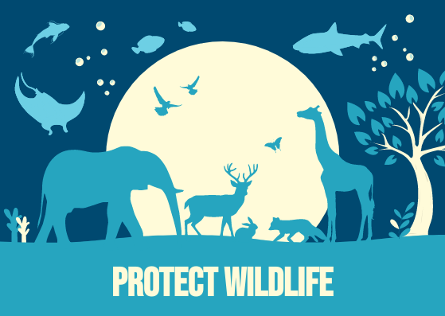

Skills & Safety • Philippines
Philippine Wildlife Safety Guide
Observe wildlife from a safe distance. Do not feed, touch, chase, or take wild animals home. Keep food secured and report wildlife concerns to park staff.
Wildlife Safety Tips
- Observe animals from a safe distance.
- Never feed, touch, or chase wild animals.
- Do not take wild animals home or remove them from their habitat.
- Keep food and snacks properly secured.
- Avoid disturbing nests, dens, and animal habitats.
- Stay on designated trails and follow park rules.
- Report injured, aggressive, or unusual wildlife behavior to park staff.
- Keep pets away from wildlife whenever possible.
Helpful reminders
- Check official park announcements and local weather before visiting.
- Follow posted rules and instructions from park staff or guides.
- Respect nature and local communities; take all trash with you.